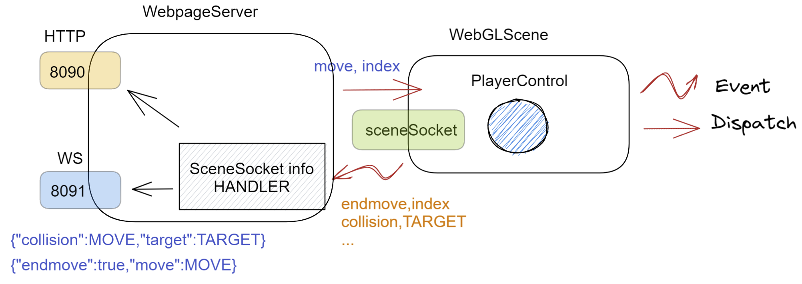
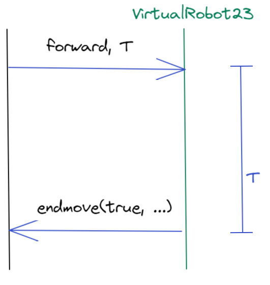
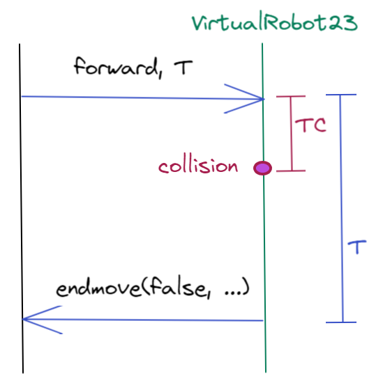
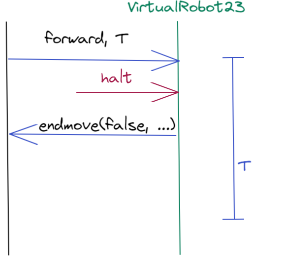

VirtualRobot23¶
Nel progetto it.unibo.virtualRobot2023, il DISI ha sviluppato un ambiente virtuale (denominato WEnv)
che include un simulatore di Differential Drive robot (DDR).
Un DDR Robot possiede due ruote motrici sullo stesso asse e una terza ruota condotta (non motrice). La tecnica differential drive consiste nel far muovere le ruote motrici a velocità indipendenti l’una dall’altra.
WEnv fa riferimento a una forma semplificata di DDR in cui le possibìili mosse sono:
muoversi avanti-indietro lungo una direzione costante
fermarsi
ruotare di 90° a destra o sinistra
Queste mosse sono realizzate inviando opportuni comandi al robot simulato.
Il robot virtuale (e in futuro anche quelli reali) viene considerato .
La scena di WEnv¶
La scena del WEnv è costruita da una descrizione che può essere facilmente definita da un progettista di applicazioni
modificando il file node\WEnv\WebGLScene\sceneConfig.js.
Nel seguito, faremo riferimento a una stanza rettangolare (vuota o con ostacoli), racchiusa entro quattro pareti.
Procedendo dal bordo superiore e muovendoci in senso orario, i nomi delle pareti sono:
wallUp, wallRight, wallDown, wallLeft.
La scena può anche presentare uno o più dispositivi Sonar che rilevano la presenza del robot e ne misurano la distanza.
Si veda NaiveGui page.
Come attivare WEnv¶
Installare Node.js
In
it.unibo.virtualRobot2023\node\WEnv\server, eseguire npm installIn
it.unibo.virtualRobot2023\node\WEnv\WebGLScene, eseguire npm installIn
it.unibo.virtualRobot2023\node\WEnv\server\src, eseguire node WebpageServer.js
WEnv viene anche distribuito come immagine Docker, attivabile direttamente o con docker-compose.
docker run -ti -p 8090:8090 -p 8091:8091 --rm docker.io/natbodocker/virtualrobotdisi23:1.0
docker-compose -f virtualRobot23.yaml up
//Per terminare: docker-compose -f virtualRobot23.yaml down
Per un overview su Docker e DockerCompose si veda: Introduction to Docker and DockerCompose.
Come interagire con WEnv¶
Stringhe che esprimono comandi di movimento al robot possono essere inviate a WEnv in due modi:
come messaggi HTTP POST inviati sulla porta 8090. E’ una forma di comunicazione sincrona (request-response).
come messaggi inviati su un Websocket alla porta 8091. E’ una forma di comunicazione asincrona (fire-and-forget) che implica l’emissione, da parte di WEnv, di un Messaggio di stato

WEnv non acetta altre connessioni hhtp://HOSTADDR:8090 oltre la prima
NaiveGui.html¶
Per consentire agli utenti umani prove di interazione con WEnv,
il progetto definisce una pagina HTML (file node/clients/NaiveGui.html) che permette di:
visualizzare la scena corrente (il virtual robot deve essere stato attivato);
inviare comandi cril al VirtualRobot in modo sincrono (via HTTP) e in modo asicrono (via WebSocket)
visualizzare nella
DisplayAreale informazioni emesse da WEnv (Messaggio di stato).
Ponendo il mouse sulla scena, si possono inviare al robot comandi tramite tastiera:
tasto w: avanti
tasto s: indietro
tasto a: ruota a sinistra di 90°
tasto d: ruota a destra di 90°
Sulla scena compare un menu Open controls che presenta comandi con cui modificare la scena, inserendo/eliminando oggetti. Le modifiche vengono perse al reload della pagina.
NaiveGui page¶
La pagina si presenta come segue:

Attraverso questa GUI possiamo effettuare esperimenti come quelli che seguono:
inviare un comando SYNCH e vedere l’esito sulla DISPLAY AREA
inviare un comando SYNCH e interromperlo con i pulsanti HALTPOST oppure HALT
inviare un comando SYNCH e subito dopo un altro comando ASYNCH o SYNCH (not allowed)
inviare un comando ASYNCH e vedere l’esito sulla DISPLAY AREA.
inviare un comando ASYNCH e subito dopo un comando SYNCH (not allowed)
Si noti che un valore di tempo -1 significa ‘forever’ e occorre sempre inviare un comando HALT
per poterne effettuare un altro. Si consiglia di evitare l’uso del valore -1, a favore di valori
interi positivi adeguatamenti alti in relazione al dominio applicativo.
Esperimento misto¶
Eseguire il comando
curl -d "{\"robotmove\":\"moveForward\", \"time\":\"2000\"}" -H "Content-Type: application/json" -X POST http://localhost:8090/api/move
Entro
2000msec premere il pulsanteHALT(oHALTPOST) di NaiveGui.html
WEnv invia la risposta {"endmove":false,"move":"moveForward-interrupted"} per il comando curl e la stessa
informazione ai client-WS (che viene visualizzata sulla DISPLAY AREA di NaiveGui.html):
Comandi-base per il robot in cril¶
Il linguaggio per esprimere comandi di movimento del robot virtuale viene detto cril (concrete-robot interaction language) e consiste di stringhe JSON secondo la sintassi che segue:
{"robotmove":"CMDMOVE", "time":T}
CMDMOVE ::= "turnLeft" | "turnRight" | "moveForward" | "moveBackward" | "alarm"
T ::= <NaturalNum>
alarm¶
Il comando “alarm” non è stato denominato halt per introdurre l’idea che il robot può fermarsi anche in caso
di situazioni anomale, come ad esempio un calo dell’alimentazione o un incendio.
Il comando alarm inviato con Interazione sincrona produce sempre la risposta
{"endmove":true,"move":"halt"}.Il comando alarm inviato con Interazione asincrona non produce messaggi di risposta.
Interazione sincrona¶
In una interazione request-response, la risposta è espressa in forme di stringhe JSON che assumono valori diversi in relazione alle situazioni che si possono avere.
{"endmove":"RESULT", "move":"MINFO" }
RESULT ::= true | false | notallowed
MINFO ::= MOVEID | MOVEID-collision | MOVEID-interrupted
MOVEID ::= moveForward | moveBackward | turnLeft | turnRight
Un comando attivato con HTTP POST con durata T, potrebbe terminare prima del tempo T in quanto:
il robot ha ricevuto (prima del tempo
T) il comando alarm.

|
mossa che termina con successo |

|
mossa interrotta da alarm |
Nel caso di interazione sincrona, si ha che:
Non si può interrompere un comando con un altro comando sincrono diverso da alarm.
Collision¶
Se un comando provoca il contatto del robot con un ostacolo,
il comando ha comunque durata T.

|
mossa sincrona che provoca collisione |
Tuttavia, i client-WS ricevono ANCHE l’informazione (Messaggio di stato) collision, che assume la forma che segue:
{"collision":"moveForward","target":"OBSTACLEID"}
Il mondo virtuale permette di inserire nel messaggio anche il nome dell’ostacolo (OBSTACLEID). Questo ovviamente
non è possibile nel mondo reale, ma al momento può essere utile per comprendere meglio il comportamento
delle applicazioni.
Riportiamo nel seguito alcuni casi rilevanti, dopo avere collocato il robot nello stato iniziale convenzionale HOME.
Stato iniziale del virtualrobot¶
il robot è rivolto verso il basso e si trova nell’angolo superiore sinistro (locazione denotata d’ora in poi come HOME).
Esempi di comandi al VirtualRobot23¶
I comandi sono inviati, al momento, usando il tool curl e hanno la forma:
curl CMD -H "Content-Type: application/json" -X POST http://localhost:8090/api/move
Gli esempi che seguono sono riferiti alla scena-base del progetto it.unibo.virtualRobot2023;
in essi riporteremo solo la forma di CMD.
Movimento in avanti normale
- Comando: muovi in avanti per 1300 msec:
curl -d "{\"robotmove\":\"moveForward\", \"time\":\"1300\"}" ...- Risposta:
{"endmove":true,"move":"moveForward"}
Movimento in avanti che provoca collisione con la parete wallDown:
- Comando: muovi in avanti per 2200 msec:
curl -d "{\"robotmove\":\"moveForward\", \"time\":\"2200\"}" ...- Risposta:
{"endmove":false,"move":"moveForward-collision"}
Movimento in avanti con interruzione
- Comando: comando1 seguito da alarm prima della fine:
curl -d "{\"robotmove\":\"alarm\", \"time\":\"10\"}" ...- Risposta:
{"endmove":false,"move":"moveForward-interrupted"}
Ritazione a sinistra normale
- Comando:ruota a sinistra con time 300 msec:
curl -d "{\"robotmove\":\"turnLeft\", \"time\":\"300\"} ..."- Risposta:
{"endmove":true,"move":"turnLeft"}
Movimento in avanti subito seguito da rotazione
Comando: comando1 seguito (prima della fine) da comando4 o altro comando SYNCH, diverso da
HALTPOSTRisposta:{"endmove":"notallowed","move":"turnLeft"}{"endmove":true,"move":"moveForward"}
Esempi di interazione sincrona con WEnv basati su programmi Java saranno introdotti nella sezione TestMovesUsingHttp.
Interazione asincrona¶
Inviare un comando in modo fire-and-forget significa non attendere risposta.
Messaggio di stato¶
Una volta eseguto il comando, il server WEnv invia a tutti i client connessi attraverso la connessione Websocket informazioni sull’esito del comando (Messaggio di stato), con la seguente sintassi:
{"endmove":"RESULT", "move":"MINFO"}
RESULT ::= true | false
MINFO ::= MOVEID | MOVEID_notallowed (asynch) | MOVEID-interrupted
MOVEID ::= moveForward | moveBackward | turnLeft | turnRight
Il significato dei valori di MINFO è il seguente:
MOVEID-interrupted: mossa
MOVEIDinterrotta perchè il robot ha ricevuto un comandoalarmMOVEID_notallowed (asynch): mossa
MOVEIDrifiutata (non eseguita) in quanto la mossa relativa al comando precedente non è ancora terminata.
L’invio asincrono di un comando non blocca il chiamante; di conseguenza, un client può inviare un nuovo comando su Websocket prima che il precedente sia terminato o sia stato interrotto. Vale la seguente regola:
Wenv NON esegue un comando, se un comando precedente non è terminato.
Dunque:
si invio un comando che dura un tempo
Te questo provoca collisione, non posso inviare un altro comando (che non sia alarm) prima della scadenza diT.
Test di interazione asincrona con WEnv basati su programmi Java saranno introdotti più avanti (si veda TestMovesUsingWs).
Un cliente connesso a WEnv mediante Websocket può ricevere anche informazioni su variazioni dello stato del ‘mondo’, quali:
dati emessi dai sonar presenti nella scena quando rilevano un oggetto in movimento;
dati emessi dai sensori di impatto posti davanti e dietro al robot, quando rilevano un ostacolo. Questi dati sono automaticamente convertiti in messaggi Collision.
Se nell’ambiente è presente un sonar e il robot vi passa davanti, WEnv genera:
{"sonarName": "<sonarName>", "distance": <int>, "axis": "AXIS" } AXIS = x | y //a seconda dell'orientamento del sonar //Esempio: {"sonarName":"sonar1","distance":-6,"axis":"y"}
WEnv - note di implementazione¶
L’implementazione di WEnv si basa su due componenti principali:
server: che definisce il programma
WebpageServer.jsscritto con il framework Node ExpressWebGLScene: componente che gestisce la scena
Architettura di WEnv¶
{kind=link}
WebpageServer.js utilizza due diversi tipi di WebSocket:
un socket (detto sceneSocket) basato sulla libreria socket.io che viene utilizzato per gestire l’interazione con WebGLScene.
socket.io non è un’implementazione WebSocket.
Sebbene socket.io utilizzi effettivamente WebSocket come trasporto quando possibile, aggiunge alcuni metadati a ciascun pacchetto: il tipo di pacchetto, lo spazio dei nomi e l’ID di riconoscimento quando è necessario un riconoscimento del messaggio. Ecco perché un client WebSocket non sarà in grado di connettersi correttamente a un server Socket.IO e un client socket.io non sarà in grado di connettersi a un server WebSocket.
il websocker 8091 basato sulla libreria ws : questo socket viene utilizzato per gestire comandi applicativi asincroni per muovere il robot inviati da client remoti e per inviare a client remoti un Messaggio di stato.
WEnv utilizza la libreria Node einaros per accettare questi comendi.
Il modulo ws non funziona nel browser: bisogna utilizzare l’oggetto WebSocket nativo.
Quando WebvGLScene rileva una collisione tra il robot virtuale e un ostacolo,
invoca l’utilità eventBus.js per ‘emettere un evento collisione’
oltre lo sceneSocket.
Questo evento è gestito da un apposito handler (vedi sceneSocketInfoHandler in WebpageServer.js),
che reindirizza le informazioni a tutti i client connessi sulla 8091.
Programmi naive¶
L’ambiente WEnv verrà utilizzato nello sviluppo di applicazioni proattive/reattive basate su componenti che interagiscono a scambio di messaggi con interazioni sincrone e/o asincrone.
Durante lo sviluppo di queste applicazioni, a complessità via via crescente, avremo modo di costruire infrastrutture di supporto e astrazioni di comunicazione capaci di agevolare il compito dell’application-designer.
Prima di procedere in questa direzione, introduciamo alcuni esempi di controllo del robot attraverso programmi Java scritti in modo ‘naive’, avvalendoci nel modo più semplice e diretto delle librerie disponibili come supporto alle comunicazioni vie rete.
TestMovesUsingHttp¶
In javasrc/it/unibo/virtualRobot2023/clients
TestMovesUsingHttp.java Esegue mosse di base del robot inviando vie |
Key point: Richiesta sincrona. Richiede 1 thread. |
Dal punto di vista ‘sistemistico’ osserviamo che:
Il codice di comunicazione è scritto completamente dal progettista dell’applicazione che usa la libreria org.apache.http.
La gestione delle risposte JSON viene eseguita utilizzando la libreria json-simple.
Dal punto di vista ‘applicativo’, osserviamo che:
Il chiamante esegue comandi nella forma request-response.
Un eventuale Messaggio di stato inviato da WEnv non viene percepito.
E’ possibile interrompere la esecuzione di una mossa inviando il comando alarm.
Una mossa che termina prima del tempo indicato nel comando (per interruzione o Collision, restituisce la risposta
{"endmove":"false", "move":"MINFO" }introdotta in Interazione sincrona.
L’interazione mediante HTTP viene realizzata da un client org.apache.http.client invocato entro
una procedura di utilità definita come segue:
callHTTP¶
private JSONParser simpleparser = new JSONParser();
protected JSONObject callHTTP( String crilCmd ) {
JSONObject jsonEndmove = null;
try {
StringEntity entity = new StringEntity(crilCmd);
HttpUriRequest httppost = RequestBuilder.post()
.setUri(new URI(URL))
.setHeader("Content-Type", "application/json")
.setHeader("Accept", "application/json")
.setEntity(entity)
.build();
CloseableHttpResponse response = httpclient.execute(httppost);
String jsonStr = EntityUtils.toString( response.getEntity() );
jsonEndmove = (JSONObject) simpleparser.parse(jsonStr);
} catch(Exception e){...}
return jsonEndmove;
}
TestMovesUsingHttp tests¶
|  |
public void doForward() {
String forwardcmd="{\"robotmove\":\"moveForward\",\"time\":\"1000\"}";
CommUtils.waitTheUser("PUT ROBOT in HOME and hit");
JSONObject result = callHTTP( forwardcmd );
CommUtils.outblue("moveForward endmove=" + result);
}
|
|  |
public void doCollision() {
String forwardcmd="{\"robotmove\":\"moveForward\",\"time\":\"3000\"}";
JSONObject result = callHTTP( forwardcmd );
CommUtils.outblue("moveForward endmove=" + result);
}
|
|  |
public void doHalt() {
String forwardcmd="{\"robotmove\":\"moveForward\",\"time\":\"3000\"}";
sendAlarmAfter(1000);
JSONObject result = callHTTP( forwardcmd );
CommUtils.outblue("moveForward endmove=" + result);
}
|
Invio di alarm¶
Per inviare al robot un comando halt (messaggio alarm) si possono usare diversi modi:
Usare NaiveGui.html.
Lanciare una nuova applicazione Java.
Attivare (come fatto in
doHalt) un Thread interno a TestMovesUsingHttp, ma senza riusare lo stesso metodo callHTTP:protected void sendAlarmAfter( int time ){ new Thread(){ protected JSONObject mycallHTTP( String crilCmd ) { ... } public void run(){ CommUtils.delay(time); JSONObject result = mycallHTTP( haltcmd ); CommUtils.outgreen("sendAlarmAfter result=" + result); } }.start(); }
AutomaticTestHTTP¶
Grazie a JUnit, possiamo includere le azioni di TestMovesUsingHttp tests all’interno di una unità di testing che le esegue in modo automatizzato.
import org.junit.Before;
import org.junit.Test;
import org.apache.http.impl.client.CloseableHttpClient;
import org.apache.http.impl.client.HttpClients;
public class AutomaticTestHTTP {
private CloseableHttpClient httpclient;
@Before
public void init(){
httpclient = HttpClients.createDefault();
//ASSUNZIONE: prima di ogni test il robot deve essere in HOME
}
@Test
public void doForward() {
JSONObject result = callHTTP( forwardcmd );
assert( result.get("endmove").equals("true") && result.get("move").equals("moveForward")) ;
//BACK TO HOME
JSONObject result1 = callHTTP( backwardcmd );
assert( result1.get("move").toString().contains("moveBackward")) ;
}
}
TestMovesUsingWs¶
In javasrc/it/unibo/virtualRobot2023/clients
TestMovesUsingWs.java Esegue mosse di base del robot inviando via |
Key point: Richiesta asincrona Richiede 4 thread, a causa della libreria |
Dal punto di vista ‘sistemistico’, osserviamo che:
Il codice di comunicazione è scritto completamente dal progettista dell’applicazione, che utilizza la libreria
javax.websocket(vedi anche I WebSocket Comunicazione Asincrona Full-Duplex Per Il Web)
Annotazioni
Gli eventi del ciclo di vita dell’endpoint WebSocket sono gestiti mediante Annotazioni secondo lo schema che segue:
@ClientEndpoint //La classe viene trattata come un client WebSocket public class ... { @OnOpen //chiamato quando si avvia una nuova connessione WebSocket public void onOpen(Session userSession){ ... } @OnMessage //chiamato quando arriva un messaggio di stato public void onMessage(String message){ ... } @OnError //chiamato quando si verifica un problema con la comunicazione public void onError (sessione di sessione, errore lanciabile){...} @Chiudi //chiamato alla chiusura della connessione WebSocket public void onClose(Session userSession,CloseReason reason){...} }
Dal punto di vista ‘applicativo’, osserviamo che:
Il chiamante esegue concettualmente una fire-and-forget.
Un eventuale Messaggio di stato viene ‘iniettato’ nell’applicazione tramite una chiamata al metodo annotato con
@OnMessage.E’ possibile interrompere la esecuzione di una mossa inviando il comando alarm.
Per una mossa che termina prima del tempo indicato nel comando (per interruzione o Collision, vengono percepiti due Messaggio di stato:
{"collision":MOVEID, "target":"..." }e{"endmove":"false", "move":"MINFO" }
L’interazione mediante WebSocket viene realizzata dalla libreria javax.websocket invocato entro
una procedura di utilità definita come segue:
callWS¶
//Fase iniziale di connessione
private Session userSession = null;
WebSocketContainer container = ContainerProvider.getWebSocketContainer();
container.connectToServer(this, new URI("ws://"+addr));
@OnOpen
public void onOpen(Session userSession) {
this.userSession = userSession;
}
protected void callWS(String msg ) {
this.userSession.getAsyncRemote().sendText(msg);
// try {
// this.userSession.getBasicRemote().sendText(msg);
// //synch version: blocks until the message has been transmitted
// }catch(Exception e) {}
}
TestMovesUsingWs onMesage¶
@OnMessage
public void onMessage(String message) {
long duration = System.currentTimeMillis() - startTime;
try {
//{"collision":"true ","move":"..."} or
//{"sonarName":"sonar2","distance":19,"axis":"x"}
JSONObject jsonObj = (JSONObject) simpleparser.parse(message);
if (jsonObj.get("endmove") != null ) {
boolean endmove = jsonObj.get("endmove").toString().equals("true");
String move = (String) jsonObj.get("move") ;
CommUtils.outgreen("TestMovesUsingWs | endmove:" + endmove + " move="+move);
if( count++ == 0 ) { //test
callWS( turnleftcmd );CommUtils.delay(350);
callWS( turnrightcmd );
}
}else if (jsonObj.get("collision") != null ) {
String move = (String) jsonObj.get("collision");
String target = (String) jsonObj.get("target");
//halt();
//senza halt il msg {"endmove":"false","move":"moveForward-collision"} arriva dopo T
}else if (jsonObj.get("sonarName") != null ) { //JUST TO SHOW ...
String sonarName = (String) jsonObj.get("sonarName") ;
String distance = jsonObj.get("distance").toString();
}
} catch (Exception e) {
CommUtils.outred("onMessage " + message + " " +e.getMessage());
}
}
TestMovesUsingWs tests¶
public void doForward() {
String forwardcmd="{\"robotmove\":\"moveForward\",\"time\":\"1000\"}";
CommUtils.waitTheUser("PUT ROBOT in HOME and hit");
startTime = System.currentTimeMillis();
callWS( forwardcmd );
CommUtils.waitTheUser("Hit to terminate doForward");
}
//MESSAGGI DI STATO
onMessage:{"endmove":"true","move":"moveForward"} duration=1055
|
|


|
public void doCollision() {
String forwardcmd = "{\"robotmove\":\"moveForward\", \"time\":\"3000\"}";
startTime = System.currentTimeMillis();
callWS( forwardcmd );
}
//MESSAGGI DI STATO
//SENZA halt in onMessage relativo a collision
onMessage:{"collision":"moveForward","target":"wallDown"} duration=841
onMessage:{"endmove":"false","move":"moveForward-collision"} duration=3019
//CON halt in onMessage relativo a collision
onMessage:{"collision":"moveForward","target":"wallDown"} duration=1256
onMessage:{"endmove":"false","move":"moveForward-collision"} duration=1310
|

|
public void doNotAllowed() {
String forwardcmd="{\"robotmove\":\"moveForward\",\"time\":\"1200\"}";
callWS( forwardcmd );
CommUtils.delay(400);
callWS( turnleftcmd );
}
//MESSAGGI DI STATO
onMessage:{"endmove":"false","move":"turnLeft_notallowed (asynch)"}
onMessage:{"endmove":"true","move":"moveForward"}
|
public void doHalt() {
String forwardcmd="{\"robotmove\":\"moveForward\",\"time\":\"3000\"}";
callWS( forwardcmd );
CommUtils.delay(1000);
callWS( haltcmd );
}
//MESSAGGI DI STATO
onMessage:{"endmove":"false","move":"moveForward-interrupted"} duration=1028
|
AutomaticTestWs¶
La definizione di una classe di testing automatizzato analoga AutomaticTestHTTP potrebbe non essere di immediata realizzazione. Il lettore è inviatato a individuare i problemi che sorgono a livello di scrittura del codice, sui quali noi torneremo in seguito.
TODO: Deliverable BoundaryWalk
DeliverableBoundaryWalk¶
Compilare la sezione
Problem analysisdel template2023 ponendo in luce i key-points del problema della interazione con il VirtualRobot23.In Lab2: Collegarsi a https://app.wooclap.com/VR1DISI
Ridenominare il file BoundaryWalkCognomeNome e inserirlo nella directory
Deliverablesdel proprio GIT repo privato.Compilare la sezione
Projectdescrivendo una strategia di comandi (sincroni e/o asincroni) che induce il robot:Req1 : a percorrere (una volta) il bordo perimetrale della stanza rappresentata ne La scena di WEnv
In Lab2: Collegarsi a https://app.wooclap.com/VR1DISI
In futuro il robot dovrà anche:
Req2 : fermarsi di 5 sec quando rilevato dal sonar
Compilare la sezione
Testingdescrivendo una strategia di collaudo.
VR problem¶